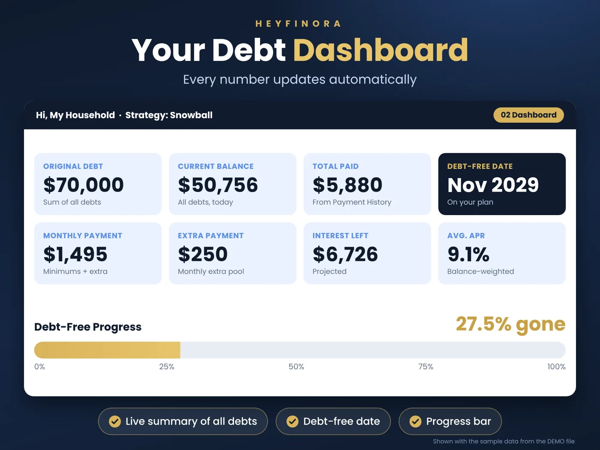
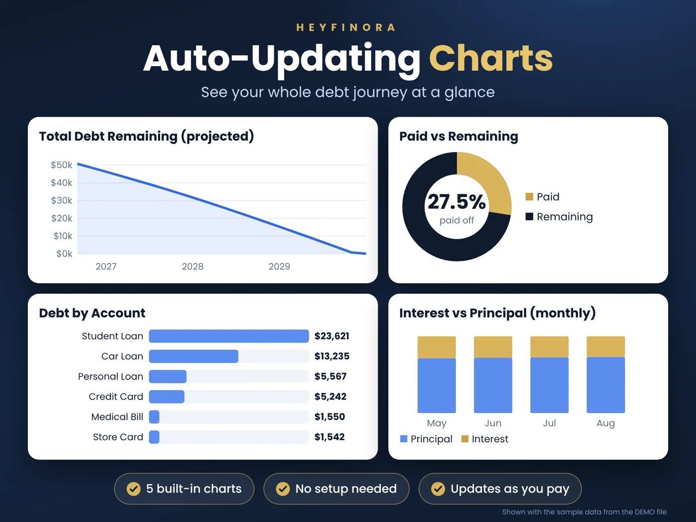
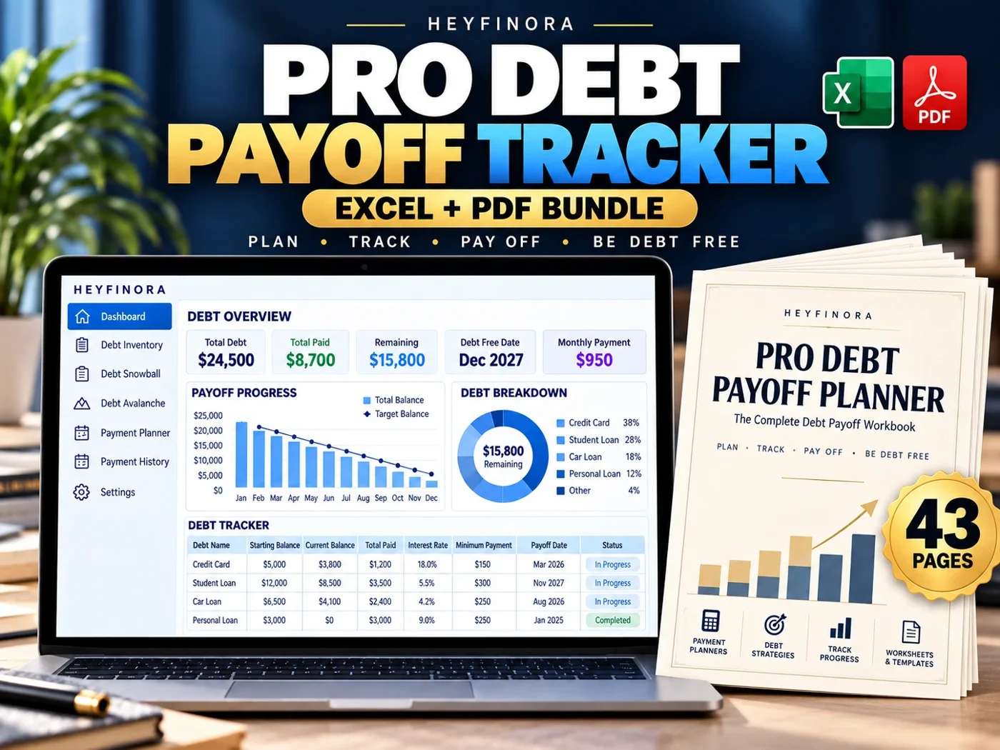
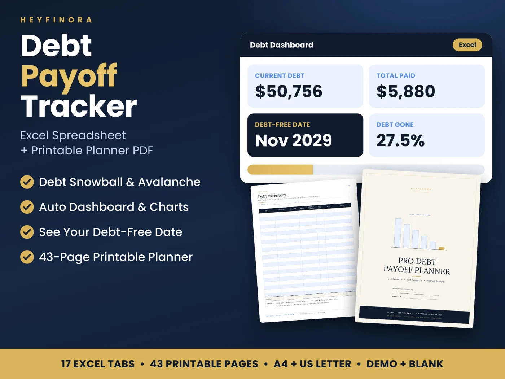
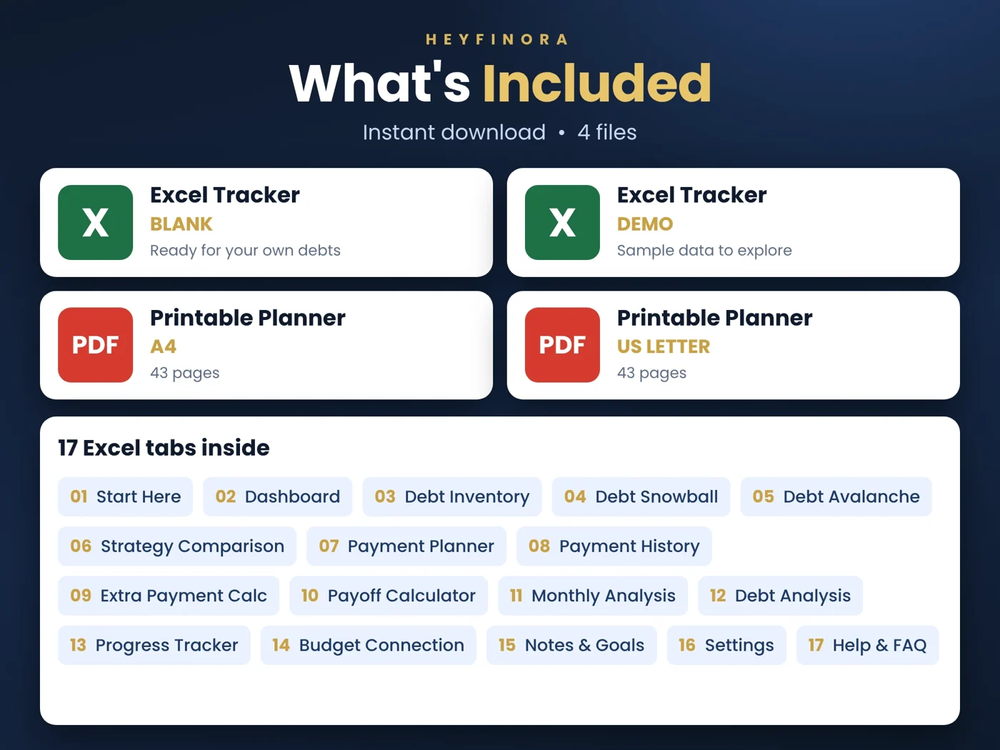

Paying off multiple debts can feel overwhelming when balances, interest rates, minimum payments, and due dates are scattered across different statements. You may be making payments every month without having a clear picture of how much progress you are making or when you could become debt-free.
A debt payoff spreadsheet can help you bring those numbers together, build a realistic repayment plan, compare payoff strategies, and track your progress over time.
Two popular approaches are the debt snowball method and the debt avalanche method. Both give you a structured way to prioritize debts, but they use different rules to decide which balance to pay off first.
In this guide, you will learn how both methods work, what to include in a debt payoff tracker, how to estimate your payoff timeline, and how to build a debt repayment routine you can maintain.
What Is a Debt Payoff Spreadsheet?
A debt payoff spreadsheet is a financial planning tool that organizes your outstanding debts and helps you monitor your repayment progress.
Instead of keeping separate notes for credit cards, personal loans, student loans, car loans, and other balances, you can record the important information in one place.
A useful debt payoff tracker typically includes:
- Debt or account name
- Current outstanding balance
- Annual percentage rate (APR)
- Minimum monthly payment
- Planned extra payment
- Actual payments made
- Interest and principal tracking
- Remaining balance
- Estimated payoff timeline
- Overall debt reduction progress
A more advanced debt payoff spreadsheet in Excel can also compare different repayment strategies, calculate projected interest, generate monthly schedules, and display progress through charts or a dashboard.
The goal is not simply to list your debts. It is to turn your financial information into a clear plan you can review and update regularly.
Step 1: List All Your Debts in One Place
Before choosing a repayment strategy, gather the latest information for each account.
For every debt, record its current balance, APR, minimum payment, and payment due date. Check your latest statements or lender accounts rather than relying on old figures.
For example, your debt inventory might look like this:
| Debt | Balance | APR | Minimum payment |
|---|---|---|---|
| Credit Card A | $800 | 24% | $35 |
| Personal Loan | $3,000 | 12% | $100 |
| Credit Card B | $2,400 | 19% | $75 |
| Auto Loan | $6,000 | 7% | $200 |
These figures are illustrative examples, not financial recommendations.
Your total outstanding debt in this example is $12,200, and the combined minimum monthly payments are $410.
This inventory helps you understand the size of your obligations and the minimum amount you need to plan for each month.
Before making extra payments, make sure you understand your contractual minimums, essential living expenses, and any urgent obligations. A repayment plan should be realistic enough to follow without causing you to miss essential bills.
Step 2: Understand the Debt Snowball Method
The debt snowball method prioritizes debts from the smallest balance to the largest balance, regardless of their interest rates.
You continue making the required minimum payments on all debts while directing available extra repayment money toward the smallest balance.
Once that debt is paid off, you redirect the money you had been paying toward it to the next debt in your chosen order.
How the snowball method works
- List your debts from the smallest balance to the largest.
- Pay the required minimum on every debt.
- Put your available extra payment toward the smallest balance.
- Once that balance reaches zero, roll the freed-up payment into the next target.
- Continue tracking your balances and progress.
Using the example above, Credit Card A has the smallest balance at $800, so it would be the first target under the snowball method.
Advantages of the debt snowball
- Provides an opportunity to pay off a smaller account relatively quickly.
- Creates visible milestones as individual debts are eliminated.
- May help people who find progress and motivation important.
- Makes the next repayment target easy to identify.
Potential disadvantage
Because the snowball method does not prioritize interest rates, a larger debt with a higher APR may continue accumulating interest while you focus on a smaller balance.
The snowball method can be useful if early wins help you stay consistent, but the total interest cost may be higher than with an otherwise comparable avalanche plan.
Step 3: Understand the Debt Avalanche Method
The debt avalanche method prioritizes debts from the highest APR to the lowest APR.
You continue making minimum payments on all debts and direct extra repayment money toward the account with the highest interest rate. After that account is paid off, you redirect the available payment toward the next-highest-rate debt.
How the avalanche method works
- List your debts from the highest APR to the lowest.
- Make the required minimum payments on every account.
- Direct your available extra payment toward the highest-rate debt.
- When that debt is paid off, move to the next-highest APR.
- Track your actual payments and update your remaining balances.
In the example above, Credit Card A has a 24% APR, making it the first avalanche target as well. After that account is cleared, Credit Card B at 19% APR becomes the next target.
Advantages of the debt avalanche
- Prioritizes the debts with the highest interest rates.
- Can reduce total interest compared with the snowball method under comparable repayment assumptions.
- Provides a systematic way to focus on expensive debt first.
Potential disadvantage
If your highest-interest debt has a large balance, it may take longer to pay it off. You may not see the same early account-closure milestones that the snowball method can provide.
Your actual results depend on your balances, rates, payment amounts, fees, and lender terms.
Debt Snowball vs. Avalanche: Which Should You Choose?
Neither method is automatically the best choice for every person. The right approach depends on your debt details, budget, motivation, and ability to maintain your payments.
| Factor | Debt Snowball | Debt Avalanche |
|---|---|---|
| Priority | Smallest balance first | Highest APR first |
| Main focus | Early payoff milestones | Interest-rate priority |
| First target | Debt with the lowest balance | Debt with the highest APR |
| Potential benefit | Visible progress | Lower projected interest in comparable scenarios |
| Possible trade-off | May cost more interest | Early wins may take longer |
The Consumer Financial Protection Bureau explains both approaches and their trade-offs in its guide to reducing debt.
A practical tip: If you are unsure which method suits you, compare both using your actual balances, APRs, and planned payments. Review the estimated total interest, payoff timeline, and first debt paid off before choosing a strategy.
A comparison is more useful than assuming one method will always produce the best result for everyone.
Step 4: Calculate Your Monthly Debt Payoff Budget
A debt repayment strategy needs a realistic monthly payment budget.
Start with your take-home income. Subtract essential living costs, necessary bills, and other financial commitments. Then decide how much you can consistently allocate toward debt repayment.
For example, if your planned debt payment budget is $600 per month and your required minimum payments total $410, the remaining $190 could potentially go toward your priority debt.
This is only an illustration. Your actual extra payment should reflect your own circumstances and any upcoming expenses.
Consider these steps:
- Review recent bank and card statements.
- Identify expenses you can reasonably reduce.
- Account for irregular costs such as annual bills and car maintenance.
- Keep enough flexibility for essential expenses and unexpected events.
- Review your plan whenever income, expenses, or interest rates change.
Avoid setting an extra-payment target that leaves you unable to cover essentials. Consistency is more useful than an ambitious plan that repeatedly fails.
Step 5: Estimate Your Debt-Free Date
One of the most useful features of a debt payoff calculator is an estimated debt-free date.

A projection uses your debt balances, interest rates, and planned payments to estimate how long repayment may take under the assumptions built into the calculation.
A more detailed debt payoff spreadsheet may calculate:
- Estimated payoff timing for individual debts
- Projected interest charges
- Total projected payments
- Month-by-month balance changes
- The effect of additional payments
- A projected date when all listed debts reach zero
These figures are estimates, not guarantees. Actual results can differ because lenders may calculate interest differently, payments may post on different dates, fees may apply, and rates or minimum payments may change.
Update your tracker with actual payments and current balances instead of assuming every month will match the original projection.
Step 6: Track Every Payment and Review Your Progress
A plan only remains useful when you compare it with what actually happens.
After making a payment, record the amount and update the relevant balance. Where your information allows, distinguish the amount applied to principal from the amount applied to interest and fees.
Review your progress monthly.
Ask yourself:
- Did I make all required payments?
- How much did my total debt decrease?
- Which balance should I prioritize next?
- Did any interest rate, fee, or minimum payment change?
- Can I safely increase my planned payment?
- Does my current payoff timeline still look realistic?
You can also track milestones such as paying off your first debt, reducing your total balance by 25%, or reaching the halfway point.
These milestones help you evaluate progress without relying only on the final debt-free goal.
What Should You Look for in a Debt Payoff Tracker?
Not every debt spreadsheet offers the same level of detail. A basic worksheet may record balances and payments, while a more advanced debt payoff tracker can calculate projections and compare different strategies.
Look for these useful features:
1. A debt inventory
A central place to record balances, APRs, and minimum payments without maintaining several separate lists.
2. Snowball and avalanche ranking
Automatic ranking can help you identify the next debt under either method without manually sorting the entire list.
3. Strategy comparison
Side-by-side projections make it easier to compare estimated interest, payoff timing, and the first account expected to be cleared.
4. A monthly payment planner
A payment plan helps you organize how much you intend to pay toward each debt every month.
5. Payment history
A payment log lets you compare planned payments with actual payments and track changes over time.
6. Extra-payment scenarios
A calculator can help you explore how different additional payment amounts may affect projected repayment time and interest.
7. A dashboard
Charts, summary figures, and progress indicators can make it easier to review your overall position without scanning every worksheet.

8. A printable planner
Some people prefer to combine spreadsheet calculations with handwritten planning, monthly reflections, and visual milestones. A printable planner can complement a digital tracker without replacing its calculations.
Choose a tool based on the features you will genuinely use, its compatibility with your software, and how easily you can maintain it.
Excel Spreadsheet or Printable Debt Payoff Planner?
An Excel spreadsheet and a printable planner can serve different purposes.
An Excel debt payoff spreadsheet is useful for entering numbers, comparing strategies, calculating projections, recording payments, and updating totals.
A printable debt payoff planner is useful for writing goals, planning monthly payments, recording reflections, reviewing milestones, and keeping a physical record of your journey.
You do not necessarily have to choose one or the other. Using both can give you a structured digital system alongside a paper-based routine.

For example, you could use Excel to compare snowball and avalanche projections, then use your printable monthly tracker to record your goals and reflect on your progress.
A Complete Excel and Printable Debt Payoff System
If you want a more structured approach than a basic debt list, the HEYFINORA Pro Debt Payoff Tracker combines a Microsoft Excel workbook with a printable debt payoff planner.

The bundle is designed to help you organize debt information, compare repayment strategies, monitor payments, and review your progress.
What is included?

The Excel workbook includes:
- A debt payoff dashboard with KPI cards, charts, and a progress bar
- Debt inventory for up to 30 debts
- Automatic debt snowball and debt avalanche ranking
- Side-by-side strategy comparison
- A monthly payment planner
- Payment history for up to 1,000 entries
- An extra-payment calculator
- A payoff calculator with an amortization schedule
- Monthly analysis and debt analysis
- Debt-free progress tracking and milestones
- Budget connection, notes, goals, settings, and help
The printable planner includes:
- A 43-page A4 PDF
- A 43-page US Letter PDF
- Debt inventory and priority worksheets
- Twelve undated monthly tracking pages
- Extra-payment and payoff tracking tools
- Monthly and quarterly reviews
- Budget, expense-cutting, sinking-fund, and emergency-fund worksheets
- A 60-month debt-free countdown
- Reflection, notes, and milestone pages
The download includes a blank Excel version and a demo Excel version with example data, along with both printable PDF sizes.
The Excel workbook is designed for Microsoft Excel 2019, Excel 2021, and Microsoft 365 on Windows and Mac. It is not designed for Google Sheets, Apple Numbers, or Excel Online. The PDF planner can be printed or used digitally with compatible PDF apps.
Explore the HEYFINORA Pro Debt Payoff Tracker on Etsy →
The product is a planning and tracking tool. It does not guarantee a particular payoff result or replace advice from a qualified financial professional.
Frequently Asked Questions
What is the best spreadsheet for paying off debt?
The best debt payoff spreadsheet is one that fits your needs and is easy to maintain. Useful features include debt inventory, payment tracking, payoff projections, interest estimates, and snowball-versus-avalanche comparison.
Is the debt snowball or avalanche method better?
The snowball method prioritizes the smallest balance, while the avalanche method prioritizes the highest interest rate. Avalanche can reduce projected interest under comparable assumptions, while snowball may provide earlier payoff milestones. Compare both methods using your own information.
How do I calculate my debt-free date?
A debt payoff calculator estimates the time needed to repay your listed debts using their balances, interest rates, and planned payments. The estimate should be reviewed regularly because actual lender terms and payments may differ from the assumptions.
Can I use Excel to track credit card debt?
Yes. You can use Excel to list credit card balances, APRs, minimum payments, actual payments, and remaining balances. A formula-driven workbook can also help compare payoff strategies and calculate projections.
Should I pay extra toward one debt or spread it across all debts?
A common approach is to make the required minimum payments on all debts and direct available extra repayment money toward one priority debt under your chosen strategy. Before doing so, check your lender terms and ensure that your overall budget remains realistic.
Can I use a printable debt payoff planner without Excel?
Yes. A printable planner can be used independently for handwritten debt inventories, payment logs, monthly reviews, and goal tracking. However, it will not automatically perform spreadsheet calculations unless you use a separate compatible tool.
How often should I update my debt tracker?
Update it whenever you make payments or learn about a material change to your balances, interest rates, fees, or minimum payments. A monthly review is a useful routine for comparing actual progress with your original plan.
Final Thoughts: Make Your Debt Repayment Plan Easier to Follow
Paying off debt begins with understanding what you owe, choosing a repayment strategy, and building a realistic monthly plan.
A debt snowball approach may help you focus on early wins. A debt avalanche approach may help you prioritize higher-interest balances. A debt payoff spreadsheet can help you compare both approaches, organize your payments, and monitor the results.
The most useful plan is one you understand, can afford, and can maintain as your circumstances change.
Start by listing your debts, reviewing your budget, and choosing a tracking routine that works for you. Then review your progress regularly and adjust your plan when necessary.
Plan clearly. Track consistently. Make progress toward zero.
Disclaimer: This article is for educational purposes only and does not constitute financial, legal, tax, or investment advice. Debt repayment outcomes depend on individual circumstances and lender terms.